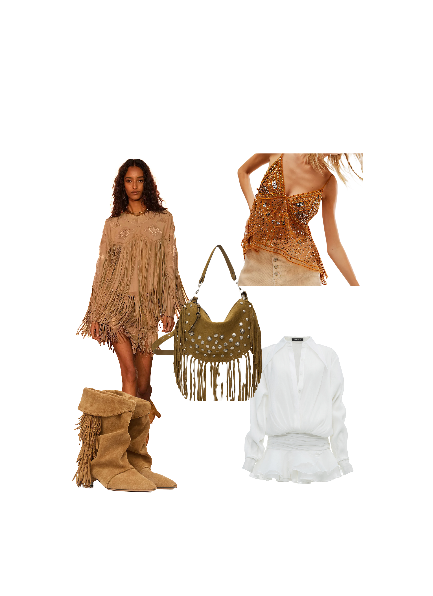
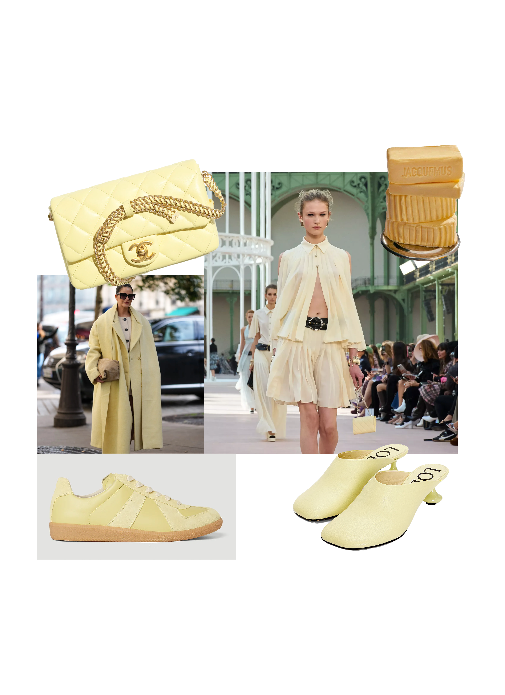
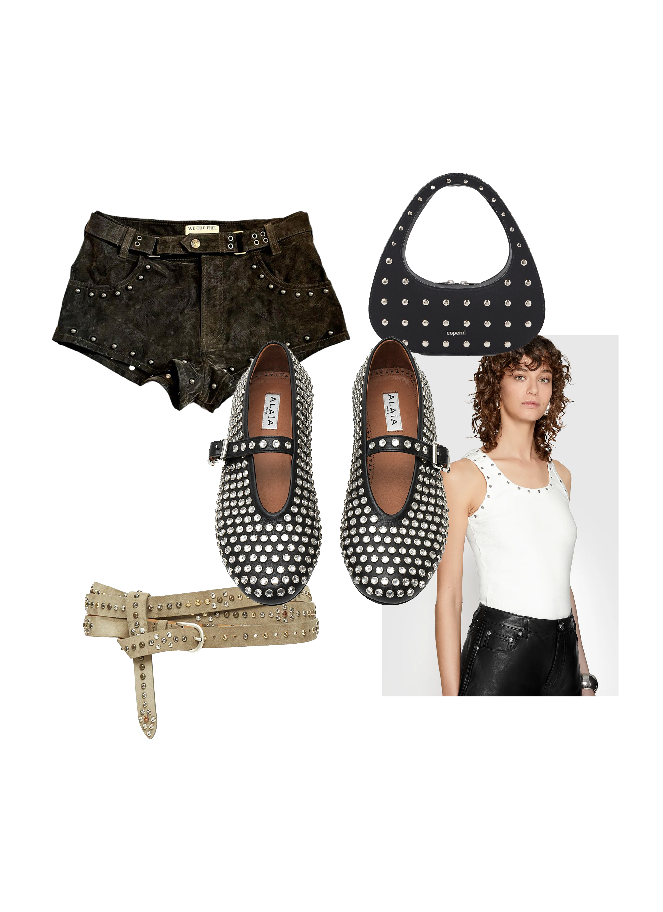

Lo último en siluetas, texturas y obsesiones del momento. Esta sección es tu acceso directo al universo fashion: elegante y siempre un paso adelante.
En 2025, el boho chic regresa con un aire más pulido: texturas artesanales, siluetas fluidas y una elegancia relajada que mezcla naturaleza, arte y estilo contemporáneo.
El amarillo mantequilla se consolida como el tono estrella de la temporada perfecta para el verano. Su suavidad y calidez lo convierten en una elección versátil y elegante, ideal para quienes buscan añadir un toque de luminosidad y frescura a sus conjuntos.
Los taches vuelven con actitud renovada: un guiño al estilo punk que se reinventa en clave elegante y sofisticada. Aparecen en chaquetas, bolsos y calzado, añadiendo un toque edgy sin perder la estética pulida del momento.
 Descargar pdf interactivo